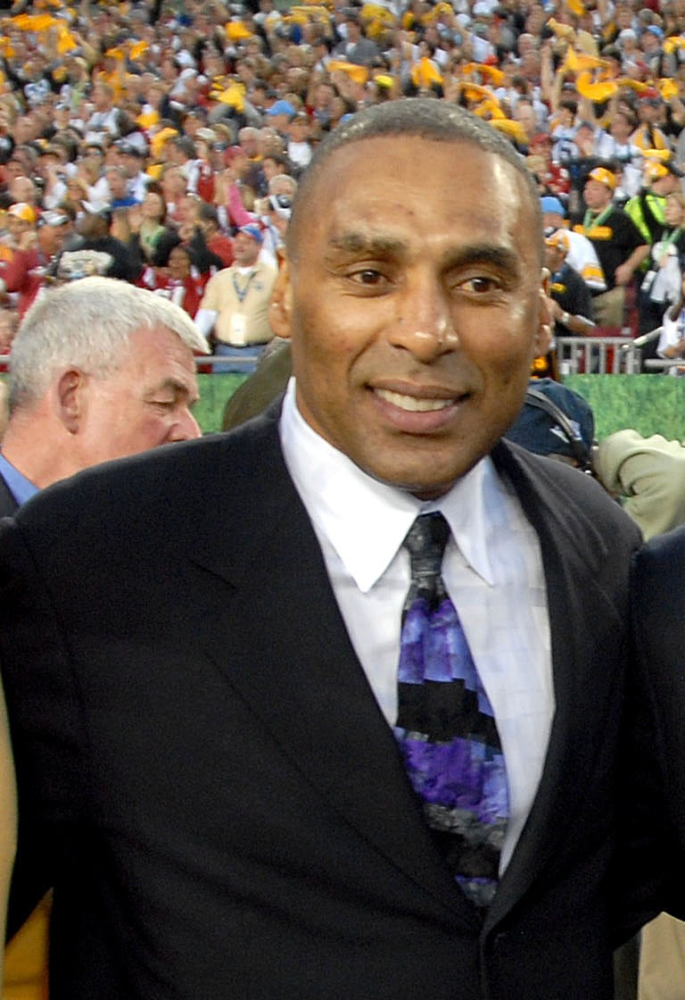
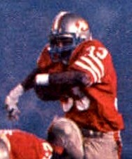

Roger Craig
Knees up, ball high, three rings, and the first 1,000 yard rusher who was also a 1,000 yard receiver. Canton finally caught up with him in 2026.
The Roger Craig Story
You could pick Roger Craig out from the upper deck at Candlestick. Knees pumping up to his chest, ball held high, running like he was still going over hurdles in Iowa. He's in the Dire Straits Walk of Life video, for crying out loud. And he was the most complete running back the 49ers ever had.
He was born in Preston, Mississippi, on July 10, 1960, and grew up in Davenport, Iowa. At Davenport Central he ran for 1,565 yards and 27 touchdowns as a senior, wrestled, and finished second in the state in both the 110 and 400 hurdles. He credited his track coach, Ira Dunsworth, with that high knee running style.
He followed his older brother Curtis to Nebraska and Tom Osborne's I formation option offense. He ran for 2,446 yards and 26 touchdowns there, six yards a carry, but he caught only 16 passes in three seasons. Nobody saw what was coming.
Bill Walsh did. The 49ers took him in the second round of the 1983 draft, 49th overall, and as a rookie he scored 12 touchdowns running and catching as the 49ers reached the NFC Championship Game.
In Super Bowl XIX on January 20, 1985, at Stanford Stadium, he ran for 58 yards, caught 7 passes for 77, and became the first player ever to score three touchdowns in a Super Bowl. 49ers 38, Dolphins 16.
The next season he did something nobody in NFL history had done. He ran for 1,050 yards and caught 92 passes for 1,016, leading the league in catches as a running back, the first 1,000 and 1,000 season ever. Only Marshall Faulk and Christian McCaffrey have done it since. He and fullback Tom Rathman, another Nebraska guy, were the Cornfield Backfield.
1988 was his masterpiece. He ran for 1,502 yards, a 49ers record at the time, caught 76 more passes, and led the NFL with 2,036 yards from scrimmage. Against the Rams in October he ran for a career high 191 yards and 3 touchdowns. He was the AP Offensive Player of the Year, and in Super Bowl XXIII he had 71 yards rushing and 8 catches for 101, the first running back with 100 receiving yards in a Super Bowl.
A year later he was back in the Super Bowl, with a touchdown in the 55 to 10 rout of Denver for his third ring.
It ended hard. In the NFC Championship Game on January 20, 1991, with the 49ers up 13 to 12 late, a hit from the Giants' Erik Howard knocked the ball loose, Lawrence Taylor recovered, and the Giants kicked the winning field goal as time ran out. It was his last game as a 49er. He played for the Raiders and the Vikings, then signed a one day contract to retire with us after 1993.
In eight seasons here he ran for 7,064 yards and 50 touchdowns and caught 508 passes for 4,442 yards, still the most catches and receiving yards by a running back in franchise history. He made four Pro Bowls, won the Len Eshmont Award twice, made the 1980s All Decade team, and went into the 49ers Hall of Fame in 2011.
Then he waited. He was a Hall of Fame finalist for the Class of 2010 and didn't get in. He finally got the call through the seniors committee and was named to the Class of 2026 on February 5, at NFL Honors in San Francisco.
On August 8, 2026, in Canton, sitting on the stage in his gold jacket, he spoke through a recorded video and told the world he has vascular dementia, which his doctors believe may be tied in part to concussions from his playing days. He said the diagnosis doesn't define him. The crowd stood up for him.
What He Meant to Us
Roger Craig is the guy I picture when I think of the 49ers running game in the '80s. Those knees. Nobody else ran like that, and nobody else could catch it out of the backfield like that either.
The 1,000 and 1,000 season in 1985 is the kind of thing that sounds made up. A running back leading the whole league in catches? Bill Walsh saw it in a kid who caught 16 passes in college. That's why Walsh was Walsh, and that's why Craig was Craig.
I still don't love talking about the fumble against the Giants. But it doesn't come close to cancelling out three rings, three touchdowns in one Super Bowl, and 100 receiving yards in another.
It took way too long to get him into Canton. When he finally got there in 2026 and told everybody about the dementia, sitting there in that gold jacket, it hit hard. He's still Roger Craig. He said so himself, and we believe him.
In Pictures


Why He Was Clutch
Roger Craig played his best football in January. In 16 playoff games with the 49ers he ran for 817 yards and 7 touchdowns and caught 63 passes for 606 yards and 2 more scores, and the 49ers won three Super Bowls.
He owned the biggest stage. Three touchdowns in Super Bowl XIX, the first player to do it. Eight catches for 101 yards in Super Bowl XXIII, the first back with 100 receiving yards in a Super Bowl. Another touchdown in Super Bowl XXIV.
In the 1988 and 1989 playoffs combined he had 502 yards rushing and receiving and 4 touchdowns across four games before the Super Bowls. When the 49ers needed yards, they went to 33.
Clutch Moments
- 1983 season
Twelve touchdowns as a rookie
A second round pick out of Nebraska, Craig scored 12 combined touchdowns running and catching in his first season, and the 49ers made it to the NFC Championship Game.
- January 20, 1985
Three touchdowns in Super Bowl XIX
At Stanford Stadium, Craig ran for 58 yards and caught 7 passes for 77 more, and became the first player ever to score three touchdowns in a Super Bowl as the 49ers beat Miami 38 to 16.
- 1985 season
1,000 and 1,000
Craig ran for 1,050 yards and caught a league leading 92 passes for 1,016 yards, the first player in NFL history with 1,000 rushing yards and 1,000 receiving yards in the same season. He scored a team high 15 touchdowns.
- October 16, 1988
191 yards in Anaheim
Against the Rams on the road, Craig ran for a career high 191 yards and 3 touchdowns in a 24 to 21 win. He finished the season with 1,502 rushing yards and was named AP Offensive Player of the Year.
- January 22, 1989
Super Bowl XXIII
In the 20 to 16 win over Cincinnati in Miami, Craig ran for 71 yards and caught 8 passes for 101 yards, the first running back with 100 receiving yards in a Super Bowl.
- January 28, 1990
Ring number three
Craig ran for 69 yards, caught 5 passes for 34 and scored a touchdown as the 49ers crushed Denver 55 to 10 in Super Bowl XXIV in New Orleans.
- August 8, 2026
The gold jacket
Enshrined in the Pro Football Hall of Fame with the Class of 2026 and presented by his old Davenport Central and Nebraska teammate Jamie Williams, Craig shared his vascular dementia diagnosis in a recorded speech and got a standing ovation.
The Highlights
What They Said About Craig
“We weren't chasing numbers. We were chasing wins.”
“I want people to know that this diagnosis doesn't define me. I am still Roger Craig.”
“Roger Craig was a player who revolutionized the running back position, delivering one of the most historic individual seasons in NFL history to date.”
“Roger is a guy I've always looked up to,”
“Just one of the greatest teams in sports history,”
Career Stats
| Year | Team | G | GS | Att | Yds | Avg | TD | Rec | RecYds | RecTD | ScrimYds |
|---|---|---|---|---|---|---|---|---|---|---|---|
| 1983 | SF | 16 | 13 | 176 | 725 | 4.1 | 8 | 48 | 427 | 4 | 1152 |
| 1984 | SF | 16 | 16 | 155 | 649 | 4.2 | 7 | 71 | 675 | 3 | 1324 |
| 1985 | SF | 16 | 16 | 214 | 1050 | 4.9 | 9 | 92 | 1016 | 6 | 2066 |
| 1986 | SF | 16 | 15 | 204 | 830 | 4.1 | 7 | 81 | 624 | 0 | 1454 |
| 1987 | SF | 14 | 14 | 215 | 815 | 3.8 | 3 | 66 | 492 | 1 | 1307 |
| 1988 | SF | 16 | 15 | 310 | 1502 | 4.8 | 9 | 76 | 534 | 1 | 2036 |
| 1989 | SF | 16 | 16 | 271 | 1054 | 3.9 | 6 | 49 | 473 | 1 | 1527 |
| 1990 | SF | 11 | 11 | 141 | 439 | 3.1 | 1 | 25 | 201 | 0 | 640 |
| 1991 | LA | 15 | 13 | 162 | 590 | 3.6 | 1 | 17 | 136 | 0 | 726 |
| 1992 | MIN | 15 | 1 | 105 | 416 | 4.0 | 4 | 22 | 164 | 0 | 580 |
| 1993 | MIN | 14 | 3 | 38 | 119 | 3.1 | 1 | 19 | 169 | 1 | 288 |
| Career | 165 | 133 | 1991 | 8189 | 4.1 | 56 | 566 | 4911 | 17 | 13100 |
LA is the Los Angeles Raiders. As a 49er: 7,064 rushing yards, 508 catches for 4,442 yards, 11,506 yards from scrimmage. Scroll the table sideways on a phone.
Postseason
| Year | Team | G | GS | Att | Yds | Avg | TD | Rec | RecYds | RecTD | ScrimYds |
|---|---|---|---|---|---|---|---|---|---|---|---|
| 1983 | SF | 2 | 2 | 10 | 16 | 1.6 | 1 | 10 | 76 | 0 | 92 |
| 1984 | SF | 3 | 3 | 33 | 136 | 4.1 | 1 | 11 | 108 | 2 | 244 |
| 1985 | SF | 1 | 1 | 9 | 23 | 2.6 | 0 | 2 | 18 | 0 | 41 |
| 1986 | SF | 1 | 1 | 5 | 17 | 3.4 | 0 | 4 | 22 | 0 | 39 |
| 1987 | SF | 1 | 1 | 7 | 17 | 2.4 | 0 | 9 | 78 | 0 | 95 |
| 1988 | SF | 3 | 3 | 56 | 274 | 4.9 | 2 | 13 | 160 | 0 | 434 |
| 1989 | SF | 3 | 3 | 62 | 288 | 4.6 | 3 | 8 | 74 | 0 | 362 |
| 1990 | SF | 2 | 2 | 20 | 46 | 2.3 | 0 | 6 | 70 | 0 | 116 |
| 1992 | MIN | 1 | 0 | 5 | 23 | 4.6 | 0 | 0 | 0 | 0 | 23 |
| 1993 | MIN | 1 | 0 | 1 | 1 | 1.0 | 0 | 0 | 0 | 0 | 1 |
| Career | 18 | 16 | 208 | 841 | 4.0 | 7 | 63 | 606 | 2 | 1447 |